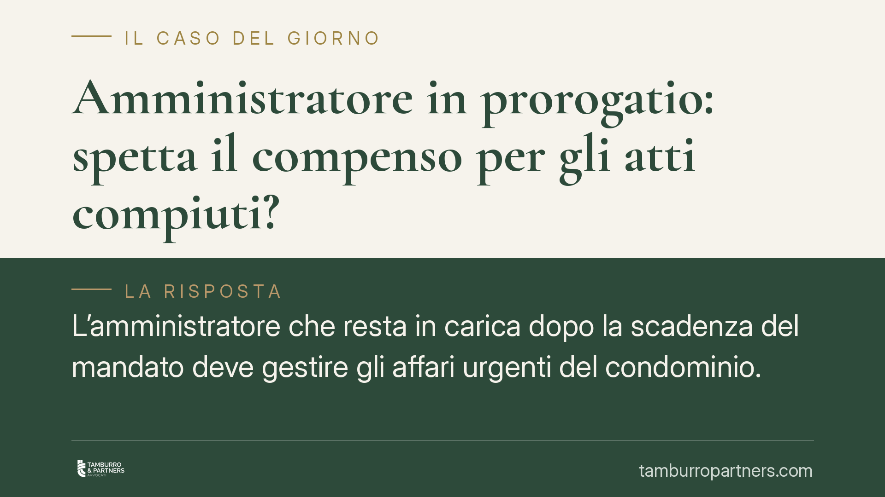

Amministratore in prorogatio: spetta il compenso per gli atti compiuti?
L'amministratore che resta in carica dopo la scadenza del mandato deve gestire gli affari urgenti del condominio. Ma per quelle attività può pretendere un compenso? Il Tribunale di Napoli, con la sentenza 5036/2025, dice di no in assenza di un accordo espresso. Una pronuncia che ridisegna i confini economici della cosiddetta prorogatio e impone cautele operative a professionisti e condòmini.

Il caso
L'amministratore di condominio ha un mandato a termine. Alla scadenza, però, la gestione non si interrompe: la legge gli impone di continuare a occuparsi degli affari urgenti fino alla nomina del successore. È il regime della cosiddetta *prorogatio*, pensato per evitare che l'ente collettivo resti privo di chi lo rappresenta.
Resta aperta una domanda pratica: per gli atti compiuti in questa fase di proroga, l'amministratore può chiedere un compenso? Il Tribunale di Napoli, Sezione VI Civile, con la sentenza 5036/2025 del 21 maggio 2025, ha risposto negativamente, salvo diverso accordo tra le parti.
Inquadramento normativo
Il riferimento è l'art. 1129, comma 8, del Codice civile, secondo cui alla cessazione dell'incarico l'amministratore è tenuto alla consegna di tutta la documentazione in suo possesso ed "esegue le attività urgenti al fine di evitare pregiudizi agli interessi comuni senza diritto ad ulteriori compensi".
La norma, introdotta dalla riforma del condominio (legge 220/2012), è chiara nel suo nucleo: la prosecuzione dell'attività nella fase di proroga non genera, di per sé, un diritto a somme aggiuntive rispetto a quanto già pattuito per il mandato ordinario. La ratio è duplice. Da un lato, si tutela la continuità gestionale dell'ente. Dall'altro, si evita che la fase transitoria si trasformi in una leva per generare costi non deliberati dall'assemblea.
Il Tribunale di Napoli ha applicato questo principio in modo rigoroso: l'obbligo di compiere gli atti urgenti non è bilanciato da un automatico diritto al compenso. Perché un corrispettivo sia dovuto occorre un accordo espresso, cioè una pattuizione specifica che riconosca il pagamento per le attività svolte in prorogatio.
Implicazioni pratiche
Per l'amministratore la conseguenza è concreta. Chi prosegue la gestione nel periodo successivo alla scadenza del mandato non può contare su un compenso ulteriore solo perché ha operato. Se non c'è una previsione contrattuale o una delibera assembleare che lo disciplini, le attività urgenti restano a titolo gratuito, come proiezione residuale dell'incarico cessato.
Per il condominio, la pronuncia offre uno scudo contro richieste economiche inattese. L'assemblea non si trova esposta a compensi non deliberati per la sola persistenza dell'amministratore uscente.
Attenzione però al confine tra "atti urgenti" e gestione ordinaria piena. La prorogatio copre solo le attività necessarie a evitare pregiudizi agli interessi comuni: non autorizza l'amministratore a condurre una gestione completa come se il mandato fosse ancora pieno. Un amministratore che eccede questi limiti rischia di agire senza titolo, con possibili profili di responsabilità.
Il punto delicato riguarda la durata della proroga. Più si allunga il tempo tra la scadenza e la nomina del successore, più cresce il carico di attività svolte a titolo gratuito. Da qui l'interesse dell'amministratore a sollecitare una rapida nomina e a documentare con precisione ogni intervento compiuto.
Cosa fare in concreto
- Disciplinate il compenso in anticipo. Inserite nel contratto di mandato o in delibera una clausola che regoli espressamente l'eventuale corrispettivo per le attività in prorogatio: senza accordo, nulla è dovuto.
- Circoscrivete gli atti urgenti. Durante la proroga, limitate l'operato a ciò che evita pregiudizi concreti agli interessi comuni, documentando la natura urgente di ogni intervento.
- Sollecitate la nomina del successore. Convocate tempestivamente l'assemblea per chiudere la fase transitoria ed evitare un prolungamento indefinito della gestione gratuita.
- Tenete traccia scritta. Conservate verbali, comunicazioni e giustificativi delle attività svolte dopo la scadenza: sono essenziali in caso di contestazione.
- Verificate la consegna della documentazione. L'obbligo di restituzione dei documenti condominiali resta pieno: una consegna incompleta può incidere sulla posizione dell'amministratore uscente.
Conclusioni
La sentenza napoletana ribadisce un equilibrio voluto dal legislatore: continuità della gestione, ma senza oneri economici automatici. Per evitare contenziosi, la via più sicura resta regolare per iscritto, fin dall'inizio del rapporto, cosa accade economicamente nella fase di proroga.
Contributo informativo a cura di Tamburro & Partners - Avv. Giuseppe Tamburro. Non costituisce parere legale.
Ogni condominio ha una storia a sé.
Se gestisci un'amministrazione e vuoi un confronto su una specifica questione condominiale, scrivi allo studio. Ti rispondiamo entro un giorno lavorativo.